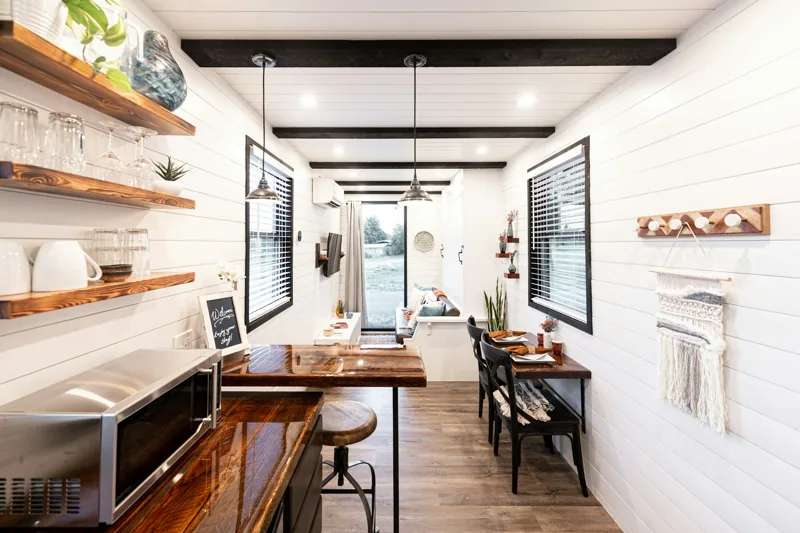
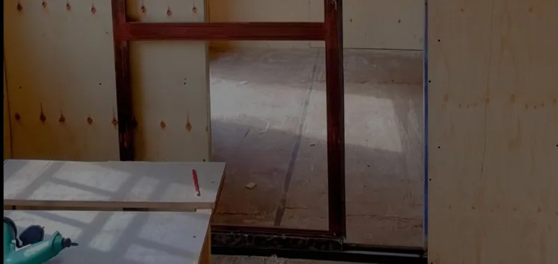

Welcome to Glorious Container Conversions Ltd.’s ultimate guide on transforming your shipping container into a warm, inviting, and energy-efficient sanctuary! Insulation is the key ingredient that will turn your metal box into a homey haven, ensuring it stays cozy in the cold, cool in the summer, and energy bills remain manageable. Ready to embark on this journey? Let’s dive deep into the world of shipping container insulation and make your container home gloriously comfortable!
Understanding Insulation: The Basics
Insulation is akin to wrapping your container home in a snug blanket. It’s a specially designed material that prevents heat from escaping through walls, ceilings, and floors. By trapping air or other gases within its structure, insulation minimizes heat transfer through conduction and convection. The effectiveness of insulation is quantified by its R-value—the higher the R-value, the better the insulation’s performance.
Why Insulation is Essential for Shipping Container Homes
Steel containers are marvels of modern engineering, designed to withstand the rigors of ocean travel. However, their excellent thermal conductivity makes them less than ideal as living spaces without proper insulation. Without insulation, a container can become an unlivable oven in the summer and a frigid icebox in the winter. Insulation helps maintain a stable indoor temperature, significantly reduces energy costs for heating and cooling, and prevents condensation issues that can lead to rust, corrosion, and mold.
The Role of Climate in Insulation Choices
Your local climate is a crucial factor in determining the type and amount of insulation your shipping container home requires. In regions with mild, temperate climates, minimal insulation may suffice. However, in areas with extreme heat or cold, robust insulation is imperative. Even in moderate climates, proper insulation can drastically enhance comfort and energy efficiency.
Placement of Insulation: Interior vs. Exterior
When insulating a shipping container, you have the option to choose between interior and exterior insulation:
- Interior Insulation: This conventional approach involves installing insulation within the container walls. It is the most common method and allows you to maintain the exterior appearance of the container. It also simplifies the installation of interior finishes and utilities.
- Exterior Insulation: This method involves placing insulation on the outside of the container, which is then covered with weather-resistant sheathing. Exterior insulation preserves interior space and provides the opportunity to create a more controlled and aesthetically pleasing exterior appearance.
Key Factors in Choosing Insulation

Selecting the right insulation for your shipping container home involves evaluating several critical factors:
- Overall Performance: This encompasses the material’s ability to prevent heat transfer effectively.
- R-value: The primary measure of insulation’s resistance to heat flow; higher R-values indicate better insulating properties.
- Air Leakage: The capacity of the insulation to prevent air from passing through it.
- Vapor Permeability: The ability of the insulation to resist water vapor migration, which is crucial for preventing condensation and mold.
- Cost: This includes both material and installation costs. DIY installation can save money but requires consideration of the ease of installation and necessary tools.
- Eco-friendliness: Many people choose shipping container homes for their sustainability. Insulation materials vary widely in their environmental impact, from production to installation.
Exploring Types of Shipping Container Insulation
There are several types of insulation to choose from, each with its advantages and disadvantages. Let’s delve into the various options:
Non-traditional Insulation
These eco-friendly and economical options offer lower R-values but are favored for their sustainability:
- Straw Bale: Used for exterior insulation due to its bulk, straw bale is an affordable and environmentally friendly option.
- Hempcrete: A bio-composite material similar to concrete but less strong and made from hemp. It offers moderate insulation and is eco-friendly.
Blanket Insulation
Fluffy, compressible, and typically used within stud walls, blanket insulation is easy to install:
- Fiberglass: Made from spun glass fibers, fiberglass is a cost-effective and widely used insulation material. However, it requires proper protective equipment during installation due to its irritant nature.
- Mineral Wool: Also known as rock wool or slag wool, this insulation is made from natural minerals or industrial byproducts. It offers excellent fire resistance and soundproofing.
- Sheep Wool: Natural and sustainable, sheep wool insulation is pricier but provides good thermal and acoustic insulation.
- Cotton/Denim: Made from recycled cotton, often from old denim jeans, this insulation is eco-friendly and has a high percentage of recycled content.
Loose-Fill Insulation
Comprising small chunks of insulating material, loose-fill insulation is blown into wall cavities:
- Cellulose: Made from recycled paper products, cellulose is a green choice that provides good thermal insulation.
- Loose-Fill Fiberglass: Similar to fiberglass batts but less dense, it is easy to install using a blower.
- Vermiculite/Perlite: These natural minerals are expanded into lightweight pellets that provide decent insulation and are fire-resistant.
Expanded Foam Insulation

Rigid boards or panels, expanded foam insulation offers high R-values and is suitable for both interior and exterior applications:
- Open Cell Polyurethane Foam: Spongy and air-filled, this foam provides moderate insulation and is cost-effective.
- Closed Cell Polyurethane Foam: Denser and gas-filled, this foam offers superior insulation and acts as a moisture barrier.
- Extruded Polystyrene (EPS): Commonly used in insulation kits, EPS is versatile and provides good thermal insulation.
- Expanded Polystyrene (XPS): Rigid and durable, XPS offers higher R-values than EPS and is moisture-resistant.
- Polyisocyanurate (Polyiso): Similar to polyurethane but more rigid, Polyiso provides excellent thermal insulation and is often used in commercial applications.
Conclusion
At Glorious Container Conversions Ltd., we believe the right insulation can transform your shipping container into a comfortable, energy-efficient, and sustainable home. Whether you opt for conventional materials like fiberglass and foam or explore innovative options like hempcrete and straw bales, proper insulation is essential. Make your container home gloriously comfortable, stylish, and sustainable with the right insulation choices!

Adoa Ernest
Marketing, Glorious Container Conversions Uganda Limited. Writes the company's articles on container design and construction.